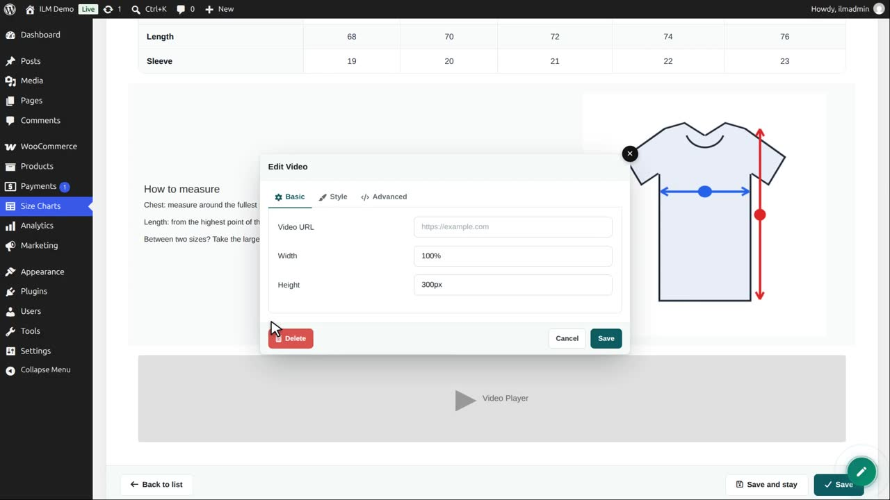
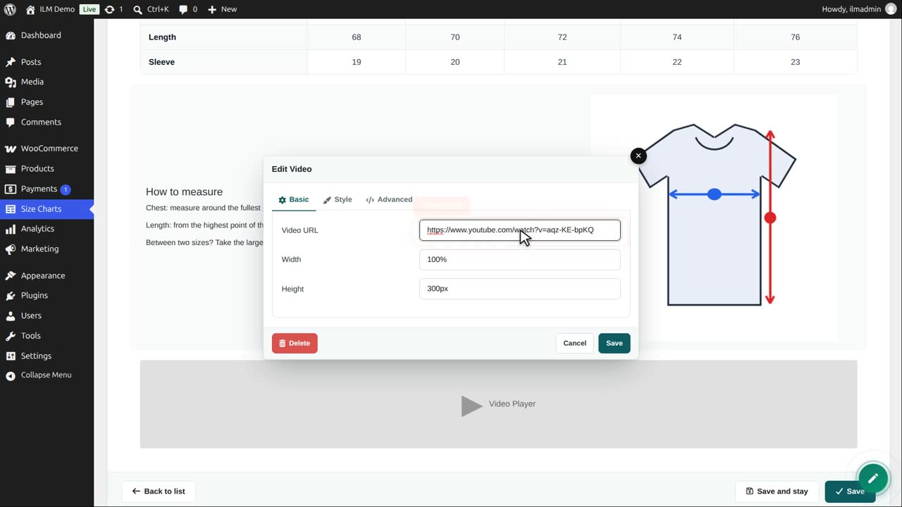
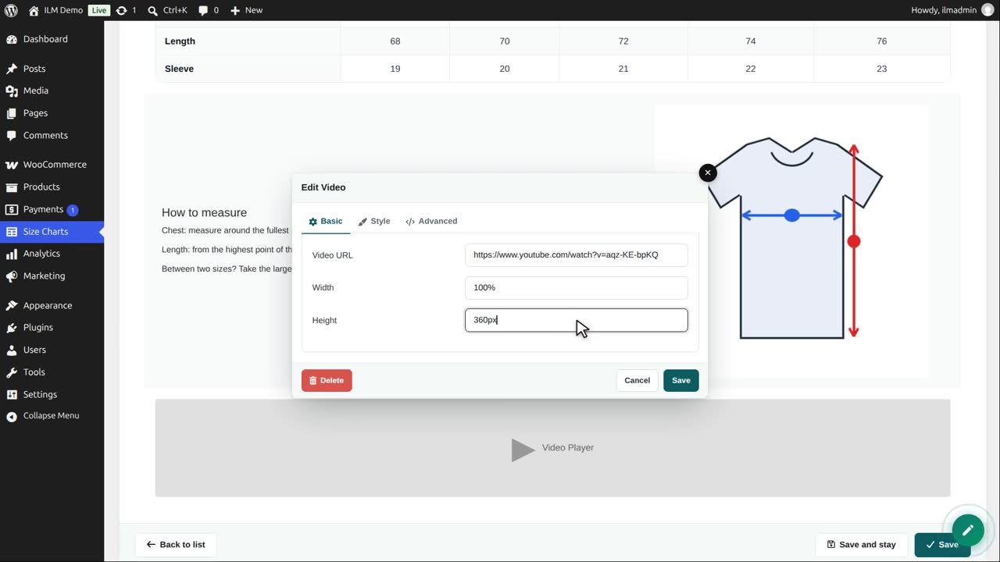
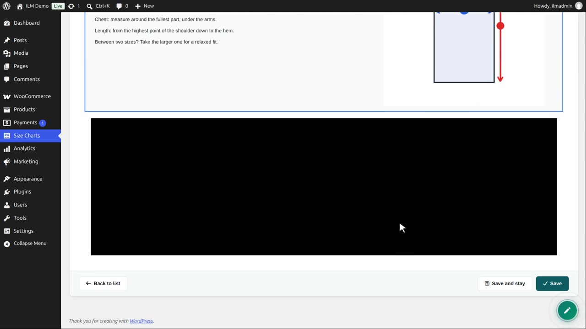
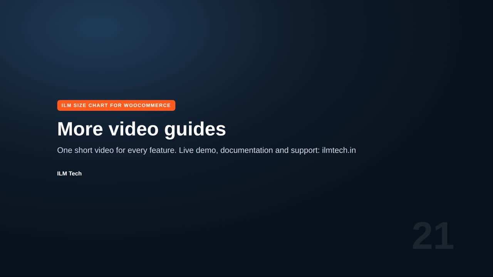

| Component | Use it for |
|---|---|
| Video | A YouTube video, e.g. on how to measure. |
Edit the chart, open the designer, add a row and choose Video.

Paste the link of the video: a YouTube or Vimeo page.

Width and height set its size. 100 percent fills the column.

Save the editor. The video is shown in its row; the shopper plays it inside the size chart.

Save the chart to keep it. A short video of how to measure answers many questions before they are asked.
